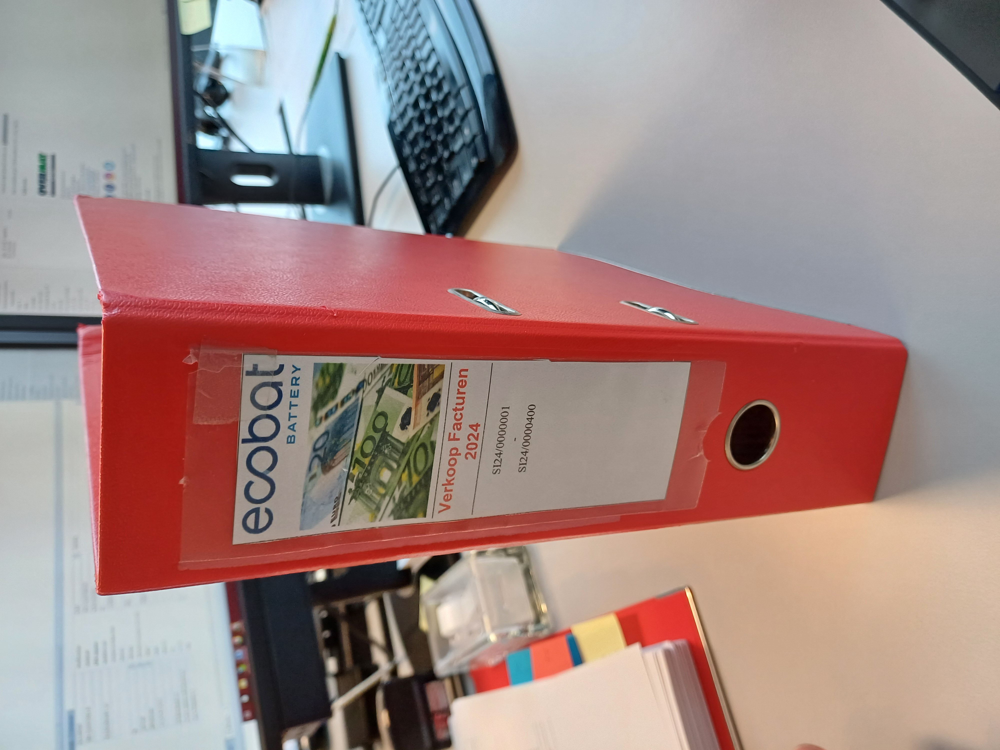
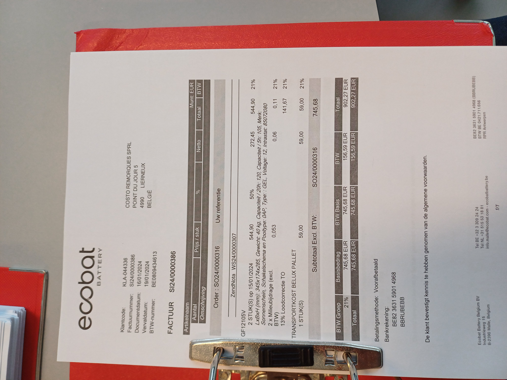

Voormiddag
Om 8.20u begon de dag wanneer Karin haar mails checkte. Om het overzicht te bewaren worden afgehandelde mails in een mapje 'Afgewerkt' gedropt. Ecobat heeft veel internationale cliënten, waar in het Engels en Frans mee wordt gecommuniceerd. Een goede talenkennis hebben is dus van cruciaal belang om te kunnen functioneren op de boekhoudafdeling. Iedere afdeling heeft 1 gemeenschappelijk mailadres, waar samen in gewerkt wordt. Dit wilt dus zeggen als bv. Brigitte een mail heeft afgehandeld en dit in de juiste map dropt, iedereen dit ziet. Zo voorkomt men dat 2 keer dezelfde factuur verwerkt wordt. Hetzelfde principe geldt voor de 2 andere afdelingen. Om 9.30u legde Karin uit hoe het bedrijf omgaat met klanten die moeilijk betalen (=dubieuze debiteuren). Wanneer een klant na verschillende aanmaningen weigert een factuur te betalen, neemt Ecobat contact op met incassobedrijf 'Deptt'. Die firma gaat na waarom de klant niet betaalt en probeert hem alsnog te laten betalen. Wanneer dat niet helpt, wordt een advocaat gecontacteerd. Om 10 uur keek ik aandachtig toe hoe Karin bankafschriften controleerde. Hierna mocht ik zelf een bankafschrift inboeken. Zo leerde ik nog een beetje werken met Vario en Bob. Nog in de voormiddag observeerde ik hoe Karin een creditnota inscande en overhandigde ik haar afgeprinte bankafschriften die zij vervolgens ingaf. Om 11 uur toonde Brigitte mij hoe er een officiële aanvraag voor een subsidie ingediend wordt op de website van de overheid. Op een factuur kon ik namelijk afleiden dat een werknemer een opleiding van Syntra had gevolgd. Dit gebeurde digitaal op de website van de Vlaamse overheid. Verder benadrukte Karin het belang dat een bedrijf een btw-nummer heeft. Via de zoekfunctie 'Public Search' ,op de website van de KBO, zocht ik enkele btw-nummers op. Op de website 'Graydon' kan Karin meer info over bedrijven, aan wie Ecobat batterijen levert, navragen.
Middagpauze
Ik krijg regelmatig koekjes. Dat staat symbool voor het aangename werkklimaat, de gezonde werksfeer.
Namiddag
Om half 2 deelde Kirsten, die op de afdeling 'Customer Service' werkt, enkele facturen aan iedereen uit. Zo had de afdeling nog wat meer werk. Alle inkomende en uitgaande documenten worden systematisch bewaard in rode kaften. Op de kaft staat ook telkens duidelijk de nummering en het type document vermeld.
 
In de namiddag illustreerde Brigitte hoe je een betaallijst moet opmaken in BOB. Een betaallijst is een reeks aankoopfacturen. Eerst moet men controleren of het eindbedrag en het IBAN-nummer van iedere leverancier klopt. Pas als alles klopt, wordt de betaallijst afgeprint en controleert Karin deze. Echter mogen een aantal aankoopfacturen niet opgenomen worden, dit om diverse redenen. Ofwel wordt de leverancier in vreemde valuta (bv. USD) betaald of betaalt Ecobat haar leverancier via domiciliëring (= het eindtotaal van de aankoopfactuur gaat automatisch van de bankrekening van Ecobat). Deze facturen worden manueel betaald. Aangezien dit uitzonderingen zijn, is er dus sprake van een automatisering van het boekhoudsysteem. Om manueel te kunnen betalen, moet Brigitte zich aanmelden op ING via 'Itsme'. Dit gebeurt via tweeledige verificatie, wat een zeer veilige methode is. Na de BIC-code van elke leverancier in de lijst gecontroleerd te hebben, uploadde Brigitte de betaallijst op de website van ING. Nu is het enkel nog wachten op de handtekening van CEO Pieter Jacobs.
Tussendoor kwam ik ook te weten dat Fatima, de hoofdverantwoordelijke van de boekhouding, regelmatig Teams-meetingen heeft, terwijl Brigitte en Karin de app amper gebruiken. Op de website Regisol checkte Brigitte wat de toestand is van een dossier dat gaat over openstaande schulden van een failliete klant waar Ecobat nog moet op innen. Nadien keek ik toe hoe Karin de kwartaalaangifte van Recupel indiende. Aangiftes moeten om een op voorhand bepaalde termijn ingediend worden (bv. btw-aangifte is maandelijks, jaarlijkse aangifte bij Bebat of een kwartaalaangifte voor Recupel). Een kwartaal is een periode van 3 maanden. Verder zag ik hoe Brigitte de leverbonnen linkte aan facturen, alvorens deze aan mekaar te nieten. Zelf mocht ik dit ook 1 keer doen. Op het einde van de dag klasseerde ik nog een paar facturen.
Mijn dag in 1 woord
roeping
'Roeping', omdat ik deze vandaag heb gevonden. Na vandaag (en deze week) besef ik dat het boekhouderswerk genoeg gevarieerd is om mijn interesse te blijven behouden. Dit is wat ik later wil doen.